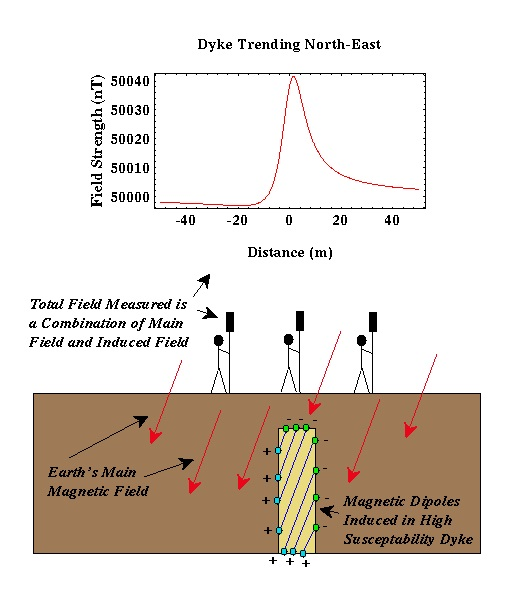

Magnetics and Geology - A Simple Example
This is all beginning to get a bit complicated. What are we actually going to observe, and how is this related to geology? The portion of the magnetic field that we have described as the main magnetic field is believed to be generated in the Earth's core. There are a variety of reasons why geophysicists believe that the main field is being generated in the Earth's core, but these are not important for our discussion. In addition to these core sources of magnetism, rocks exist near the Earth's surface that are below their Curie temperature and as such can exhibit induced as well as remanent magnetization*.
Therefore, if we were to measure the magnetic field along the surface of the earth, we would record magnetization due to both the main and induced fields. The induced field is the one of interest to us because it relates to the existence of rocks of high or low magnetic susceptibility near our instrument. If our measurements are taken near rocks of high magnetic susceptibility, we will, in general**, record magnetic field strengths that are larger than if our measurements were taken at a great distance from rocks of high magnetic susceptibility. Hence, like gravity, we can potentially locate subsurface rocks having high magnetic susceptibilities by mapping variations in the strength of the magnetic field at the Earth's surface.

Consider the example shown above. Suppose we have a buried dyke with a susceptibility of 0.001 surrounded by sedimentary rocks with no magnetic susceptibility. The dyke in this example is 3 meters wide, is buried 5 meters deep, and trends to the northeast. To find the dyke, we could measure the strength of the magnetic field (in this case along an east-west trending line). As we approach the dyke, we would begin to observe the induced magnetic field associated with the dyke in addition to the Earth's main field. Thus, we could determine the location of the dyke and possibly its dimensions by measuring the spatial variation in the strength of the magnetic field.
There are several things to notice about the magnetic anomaly produced by this dyke.
- Like a gravitational anomaly associated with a high-density body, the magnetic anomaly associated with the dyke is localized to the region near the dyke. The size of the anomaly rapidly decays with distance away from the dyke.
- Unlike the gravity anomaly we would expect from a higher-density dyke, the magnetic anomaly is not symmetric about the dyke's midpoint which is at a distance of zero in the above example. Not only is the anomaly shaped differently to the left and to the right of the dyke, but the maximum anomaly is not centered at the center of the dyke. These observations are in general true for all magnetic anomalies. The specifics of this generalization, however, will depend on the shape and orientation of the magnetized body, its location (bodies of the same shape and size will produce different anomalies when located at different places), and the direction in which the profile is taken.
- The size of the anomaly produced by this example is about 40 nT. This is a pretty good- sized anomaly. It is not uncommon to look for anomalies as small as a few nT. Thus, we must develop surveying techniques to reduce systematic and random errors to smaller than a few nT.
*We will assume that there is no remanent magnetization throughout the remainder of this discussion.
**Unlike gravity, magnetic anomalies are rather complex in shape and making sweeping statements like this can be very dangerous.